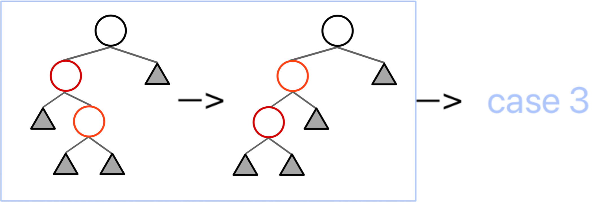
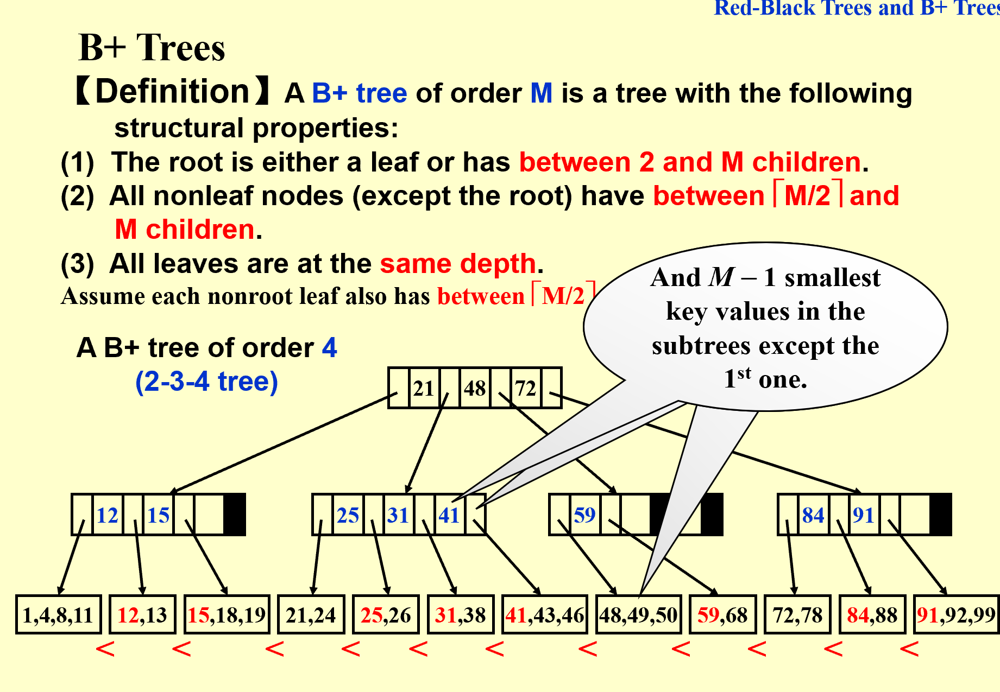

Advanced Data Structure
Week 2
Red Black Tree
Definition
Quote
OI Wiki: https://oi-wiki.org/ds/rb-tree/
定义
5条性质要记
Black Height
特定节点的黑高，等于该节点到叶结点到简单路径中（不包括自身），黑色节点的数量
Red-Black Property about Black Height
一个有\(N\)个内部节点的红黑树的高度至多为\(2\log(N+1)\)
证明如下：

Methodology
插入和删除的方法
Insert
记被插入的节点为 x，任意一个节点 node 的家长节点为 node.p，则：
- 如果 x.p 是黑色的，那么我们不需要做任何调整；
Case 0 - 如果 x.p 是红色的，那么我们需要进行调整；
- 此时因为原来的树符合红黑性质，x.p.p 必定存在（红 x.p 不能是根）且必定是黑色的；
Case 1,2,3
- 此时因为原来的树符合红黑性质，x.p.p 必定存在（红 x.p 不能是根）且必定是黑色的；
对于需要进行调整的情况，我们需要分情况讨论：
Cases
我们采用了Bottom-Up的方法，即从 x 开始，若此时能够是能解决的Case(即Case0、Case3或Case2)，则问题在这里解决；若解决不了（即Case1）,则向上递归将问题甩锅x的爷节点。重复此步骤，直到问题解决。
最坏的情况问题也会在根节点时解决，因为由定义根节点必定是黑色的
由上，所有情况可被归纳为上图右半部分

Case 3
一次染色和一次旋转即可
Case 2
进行一次LR Rotation，转化为Case 3 
Case 1
Case 3的两种情况是等价的
图中的根节点染红，将根的两个子节点染黑，类似于将黑节点“下放”， 插入的红节点“上浮”，递归转移

为了更清晰地看出各个方法之间的转化关系，于是我们可以画一个状态机
 注意，状态机中的粗线表示转换过程中，我们关注的“子树”向上攀升了一级；而细线表示我们关注的子树仍然是这一层的那一棵。以及，C 表示染色操作，R 表示旋转操作
其中，任何一个情况都可以作为一个初始情况。所以可以数出，到达 finish 的路径中，最多出现 2 次 Rotation（case 2 -> case 3 -> finish）
注意，状态机中的粗线表示转换过程中，我们关注的“子树”向上攀升了一级；而细线表示我们关注的子树仍然是这一层的那一棵。以及，C 表示染色操作，R 表示旋转操作
其中，任何一个情况都可以作为一个初始情况。所以可以数出，到达 finish 的路径中，最多出现 2 次 Rotation（case 2 -> case 3 -> finish）
Delete
Quote
写不了一点，找了几篇资料，我觉得这篇最好
- 对我来说比较清楚的思路是将红黑树的删除操作分为两步：直接删除节点（不考虑红黑树性质）和修复红黑树性质
- 对于 Part I，将删除的节点分成三类，no children, one child or two children，然后分别讨论
Note
这里对于 node with two children 的情况，我们是去找到它的后继节点 in-order successor，然后将后继节点的值赋给它，然后删除后继节点，相当于删除的其实是后继节点
这样做的好处是后继节点一定没有 left child 的，所以删除后继节点的操作会变得简单
- 对于 Part II， 史
- 上面那篇引入了Double Black和Single Black的概念，使乱七八糟的情况稍微清晰了一点
B+ Tree
Definition
Warning
网上关于B+的定义有好多版本，相互之间可能是矛盾的。

Quote
OI Wiki: https://oi-wiki.org/ds/bplus-tree/
B+ 树是 B 树 的一个升级，它比 B 树更适合实际应用中操作系统的文件索引和数据库索引。目前现代关系型数据库最广泛的支持索引结构就是 B+ 树。
B+ 树是一种多叉排序树，即每个节点通常有多个孩子。一棵 B+ 树包含根节点、内部节点和叶子节点。根节点可能是一个叶子节点，也可能是一个包含两个或两个以上孩子节点的节点。
B+ 树的特点是能够保持数据稳定有序，其插入与修改拥有较稳定的对数时间复杂度。B+ 树元素自底向上插入，这与二叉树恰好相反。
!!! note 一棵 m 阶的 B+ 树的性质 m阶 指的是一个节点的子树个数n \(\leq\) m m也可称为一棵树的Max Degree 2-3树指的就是3阶B+树，2-3-4树指的就是4阶B+树 注意：叶子节点的关键字和它的字数个数一样，即叶子节点最多能放m个关键字；而非叶子节点，关键字最多只有m-1个（最多形成m个区间） 
!!! example
一棵 B+ 树的例子

Methodology
插入和删除的方法
Find
从根节点开始，根据关键字的大小，找到对应的子树，直到找到叶子节点
OI Wiki 上的代码实现
Insert
- 若为空树，创建一个叶子节点
- 针对叶子节点，插入关键字，若超过阈值，分裂，递归转移到父节点（索引节点）进行维护
- 针对索引节点，若当前节点关键字的个数小于等于 m-1，则插入结束。否则，将这个索引类型节点分裂成两个索引节点，左索引节点包含前 \((m-1)/2\) 个 key，右节点包含 \(m-(m-1)/2\) 个 key，将第 \(m/2\) 个关键字进位到父节点中，（少了一个关键字）进位到父节点的关键字左孩子指向左节点，进位到父节点的关键字右孩子指向右节点。将当前节点的指针指向父节点，然后重复这一步
Delete
- 首先查询到键值所在的叶子节点，删除该叶子节点的数据。
- 如果删除叶子节点之后的数据数量，满足 B+ 树的平衡条件，则直接返回。 否则，就需要做平衡操作：如果该叶子节点的左右兄弟节点的数据量可以借用，就借用过来满足平衡条件。否则，就与相邻的兄弟节点合并成一个新的子节点了。
- 在上面平衡操作中，如果是进行了合并操作，就需要向上修正父节点的指针：删除被合并节点的键值以及指针。
- 由于做了删除操作，可能父节点也会不平衡，那么就按照前面的步骤也对父节点进行重新平衡操作，这样一直到某个节点平衡为止。